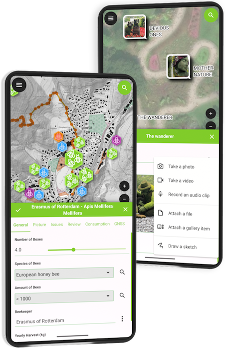
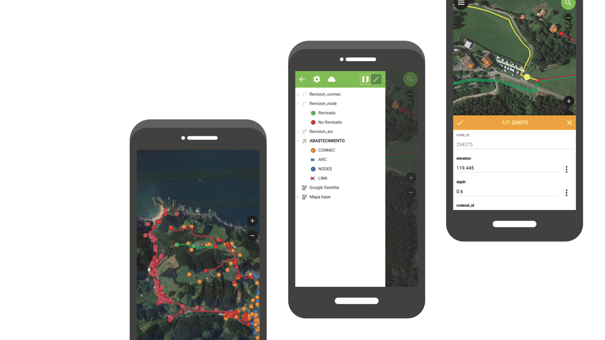
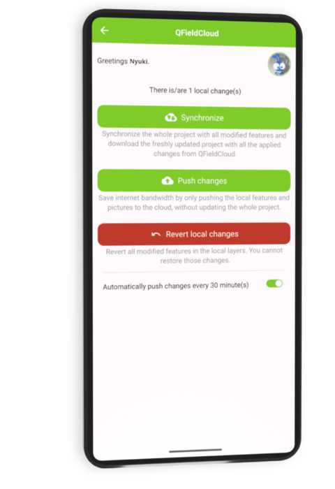
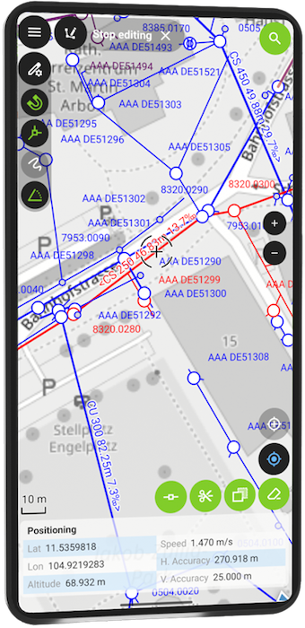
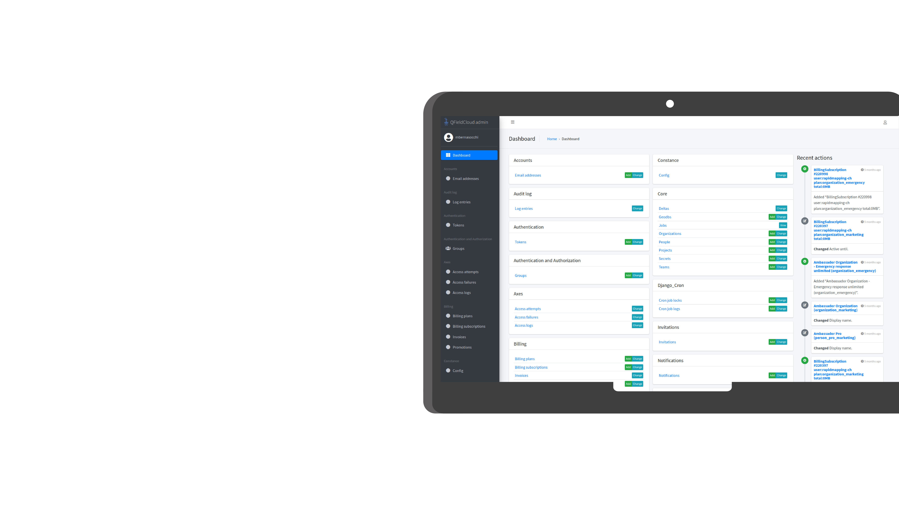

## QFIELD ## THE APP THAT MAPS YOUR WORLD <img class="vertical" src="assets/qf-phones-plugin2.png" style="width: 50%;"> --- <img src="assets/qfield-empowers.png" style="width: 80%;"> --- ### QField ### Collect | collaborate | customise - 📱 Collect and manage the data that counts - ⚡ Fast, reliable, multilingual, and open-source - 🧭 QGIS-powered — wherever your work takes you - 🌍 Forests, cities, infrastructure, disaster zones, ... --- ### Why QField? ### Built for fieldwork. Trusted worldwide. - ✅ Open source — no vendor lock-in - 🧩 Seamless QGIS integration - 💼 Used by NGOs, cities, researchers, and industries - ⏱️ Saves time — less office work, fewer errors - ☁️ Online + offline sync with QFieldCloud --- ### Smart Maps ### High-precision mapping anywhere - 🗺️ Location tracking & geofencing - 📍 Full QGIS symbology on mobile - 🎯 Optimized for spatial field tasks <p></p> --- ### Powerful Forms ### Complex logic, simple interface - 📝 Build in QGIS, no coding - ⚙️ Logic, constraints, defaults - ✅ Clean, validated field input <p></p> --- ### Capture Everything ### Media-rich data collection - 📷 Photos & video - 🎙️ Audio notes - 🔍 QR codes & NFC scanning --- ### Seamless Sync + Format Support ### Connected workflows, open formats - 🔄 Sync with QFieldCloud - ☁️ Work offline & online - 📦 GPKG, KML, GPX, PDF, more <p></p> --- ### Editing & Processing Tools ### True field editing power - ✏️ Snap, draw, reshape - 📐 Vertex editing - 🧮 Geometry ops in the field <p></p> --- ### Plugin Support ### Customize QField your way - 🔌 QML & JavaScript plugins - 🛠️ Custom workflows - 🚀 Extend functionality as needed <video class="nobox vertical" autoplay muted controls src="assets/madeforyou-video.mp4"></video> --- ### CONVENIENCE, CONVENIENCE, <span style="color: var(--opengisch-green)">CONVINIENCE</span> #### <span style= "font-weight: lighter"> Easily migrate your XLSForms into QField projects with our new QGIS plugin </span> <img src="assets/qf-convenience.png" style="width: 100%; margin-right: 70px;"> --- ### KULTURRETTER ### DAI #### – Workflow to collect and manage data for the emergency rescue of cultural heritage #### – Camera that includes geotagging (inc. compass), and details stamping <img src="/assets/2025/kulturretter.png"> --- ### NATIONAL LAND SURVEY ### FINLAND <img src="/assets/2025/nls1.png"> --- ### WASTE ### MANAGEMENT #### MILANO <img src="/assets/2025/milano-waste1.png"> --- ### WASTE ### MANAGEMENT #### MILANO #### - Plugin framework to customize UX #### - Near field communication (NFC)/QR Code #### - Powerful feature form configuration <img src="/assets/2025/milano-waste2.png"> --- ### FUTURA ### SISTEMI #### - Integration with 3rd party WebGIS management system through QFC API #### - Leveraging QField/QFC offline work capability <img src="/assets/2025/futura-sistemi.png"> --- ### NATIONAL WATER ### WASTE MANAGEMENT #### COSTA RICA | On-premise QFC <p></p>